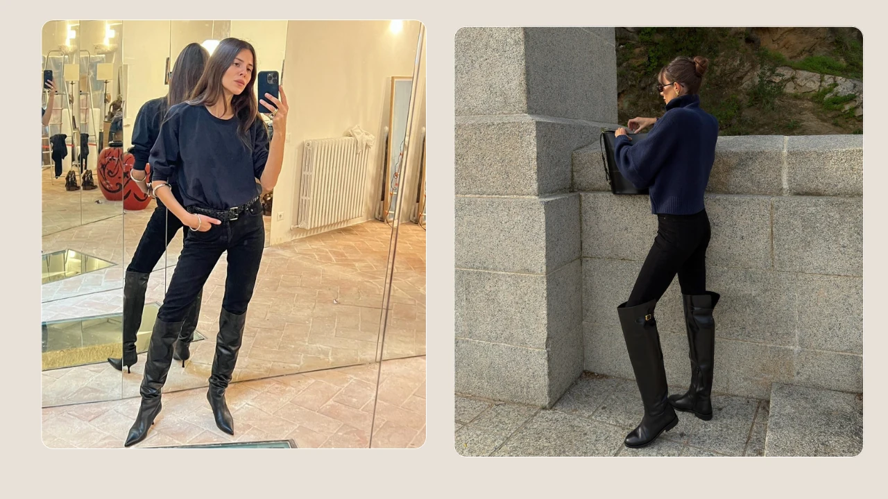

ТОНКО / Разбор
Ботфорты возвращаются: колготки или узкие джинсы?
Who What Wear рассматривает высокие сапоги через два сочетания: образ Амаль Клуни с колготками и французскую интерпретацию с узкими джинсами. Общая идея — сделать выразительную обувь частью понятного повседневного силуэта.

Почему обсуждают именно узкий силуэт
Отправная точка публикации — возвращение интереса к ботфортам, знакомым по моде 2000-х и середины 2010-х. Автор сравнивает лёгкость сочетания с колготками и более собранную линию, которую дают заправленные в высокие сапоги узкие джинсы.
В варианте с прилегающим денимом материал не образует большого объёма внутри голенища. В статье это связывается с узнаваемой французской манерой носить такую обувь. Материал сопровождается примерами вещей; это редакционный взгляд на сочетание, а не утверждение о единственном правильном способе носить ботфорты.
Что меняется, если выбрать колготки
Наш взгляд: колготки помогают работать с прозрачностью и границей между одеждой и обувью. Тонкая чёрная пара оставляет более лёгкое впечатление, плотная создаёт непрерывную цветовую линию. Оба варианта стоит оценивать вместе с длиной юбки или платья и высотой голенища.
Полезно примерить комплект целиком, а не выбирать плотность по отдельной фотографии сапог. То, как выглядит небольшой открытый участок ноги, зависит от света, цвета ткани и оттенка обуви. Число DEN само по себе не описывает итоговый образ.
Примерка важнее ностальгии
Если возвращаете старую пару сапог, сначала проверьте удобство: свободно ли сгибается колено, не собирается ли одежда внутри, не сползает ли голенище. Новый интерес к знакомому силуэту не делает прежнюю посадку автоматически подходящей.
Для сравнения подготовьте два комплекта с одинаковым верхом: один с колготками, второй с узкими джинсами. Посмотрите на них стоя и сидя. Такой небольшой эксперимент показывает разницу лучше, чем попытка выбрать «самый модный» вариант по одному кадру.
При работе с высокой обувью фактура колготок часто видна лишь частично. Если хочется подчеркнуть именно рисунок или кружево, проверьте, остаётся ли эта деталь открытой. Если главным акцентом должны быть сапоги, можно начать со спокойной однотонной пары и затем усложнять сочетание.